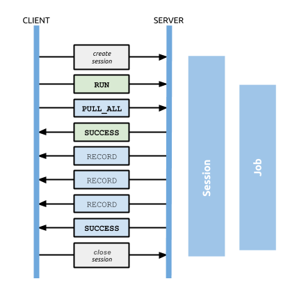
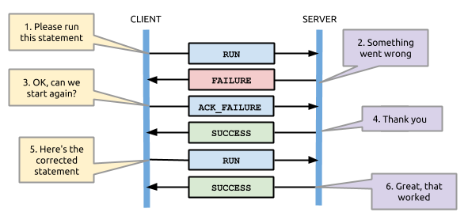

Client: <connect>
Client: 60 60 B0 17
Client: 00 00 00 01 00 00 00 00 00 00 00 00 00 00 00 00
# Version 1 None None None
Server: 00 00 00 01
# Choose
# version 1Bolt Protocol, Version 1
| Byte values within this document are represented in hexadecimal notation unless otherwise specified. |
| Integers and floating point values are transmitted and stored using big-endian byte order unless otherwise specified. |
Overview
This section describes the Bolt Protocol, version 1.
The Bolt Protocol is a client-server protocol where messages are exchanged between a client who drives an interaction and a server that processes and responds to client requests. Every exchange of messages is initiated by the client with one or more request messages; in turn these requests are consumed by the server and corresponding response messages are returned.
The diagram below illustrates a typical interaction including the order of messages sent and the life spans of the session and job (which are described in more detail in other chapters).

Starting with version 1, each release of Bolt is assigned a unique, integral version number. This number and the associated specification refers to every aspect of the protocol except for the handshake, which is unversioned. Driver authors should note that subsequent protocol versions are likely to be incompatible and with the exception of the handshake, there is no guarantee that any transport or serialisation code can be shared across versions.
The protocol is divided into two layers — Bolt Transport Layer and Messaging layer.
Bolt Transport Layer
The protocol supports both regular socket and WebSocket transport layers for sending and receiving messages. The transport layer is versioned along with the rest of the Bolt Protocol and is responsible for:
-
Negotiating Bolt Protocol version
-
Establishing and terminating sessions
-
Routing messages from clients to specific sessions and back
Sessions
Each connection to the server creates a new session that lives until that connection is closed. Each session is isolated and the server keep track of the current state, based on the requests and responses exchanged within that session.
Connecting
To begin a new session, the client connects using either a regular socket or a WebSocket. Once connected, both transport layers can be treated identically.
If the server has been configured to enable encryption, TLS, the connections need to be made using a secure socket or a secure WebSocket.
A regular socket connection should be made to the host and port the server has been configured to use for its regular socket listener. The default port for regular socket connections is 7687.
| If TLS is enabled, and no certificate has been specified, the server should automatically generate a self-signed TLS certificate. It is vital that your database driver not simply accept any certificate without validating it. If you do not verify the certificate it is very simple to bypass the encryption. You should either ensure you have a valid signed certificate installed with the server or that your application implements trust on first use. |
Handshake
After connecting, a handshake takes place to establish which Bolt protocol version should be used for that connection. This handshake is a version-independent mini-protocol which is guaranteed to remain the same, regardless of preferred or available protocol versions.
In the handshake, the client fist sends a magic four byte preamble (6060 B017) followed by four protocol versions it supports, in order of preference.
The proposal is always represented as four 32-bit unsigned integers.
Each integer represents a proposed protocol version to use, or zero (00 00 00 00) for "none".
The server will respond with a single 32-bit unsigned integer representing the chosen protocol.
This will always represent the highest-priority protocol version the server supports.
If none of the proposed protocols are supported, the server responds with zero (00 00 00 00) and closes the connection.
Initial handshake
No supported version
Client: <connect>
Client: 60 60 B0 17
Client: 00 00 00 06 00 00 00 00 00 00 00 00 00 00 00 00
# Version 6 None None None
Server: 00 00 00 00
# None
# supported
Server: <disconnect>Message transfer encoding
Bolt encodings each message using a chunked transfer encoding.
Each message is transferred as one or more chunks of data.
Each chunk starts with a two-byte header, an unsigned big-endian 16-bit integer, representing the size of the chunk not including the header.
A message can be divided across multiple chunks, allowing client and server alike to transfer large messages without having to determine the length of the entire message in advance.
Each message ends with two bytes with the value 00 00, these are not counted towards the chunk length.
A message in one chunk
Chunk size: 16
Message data: 00 01 02 03 04 05 06 07 08 09 0A 0B 0C 0D 0E 0F
00 10 00 01 02 03 04 05 06 07 08 09 0A 0B 0C 0D 0E 0F 00 00
chunk | Message | End
header | Data | MarkerA message split in two chunks
Chunk size: 16
Message data: 00 01 02 03 04 05 06 07 08 09 0A 0B 0C 0D 0E 0F 01 02 03 04
00 10 00 01 02 03 04 05 06 07 08 09 0A 0B 0C 0D 0E 0F 00 04 01 02 03 04 00 00
chunk1 | Message | chunk2 | Message | End
header | Data | header | Data | MarkerTwo messages
Chunk size: 16
Message 1 data: 00 01 02 03 04 05 06 07 08 09 0A 0B 0C 0D 0E 0F
Message 2 data: 0F 0E 0D 0C 0B 0A 09 08
00 10 00 01 02 03 04 05 06 07 08 09 0A 0B 0C 0D 0E 0F 00 00
chunk | Message 1 | End
header | Data | Marker
00 08 0F 0E 0D 0C 0B 0A 09 08 00 00
chunk | Message 2 | End
header | Data | MarkerMessaging layer
This section discusses the semantic meaning and layout of protocol messages. For details on how database types are represented in binary form, see Message Serialization.
Clients may send request messages at any time after a session is initialized. Clients may pipeline requests, sending multiple requests together.
Servers must fully respond to each request before the next request is processed and processing of requests within a session must be done in the same order in which the requests.
Servers must ignore messages sent by the client after a failure occurs on the server, until the client has acknowledged the failure. See Failure & Acknowledgement.
For each request message sent, clients must anticipate receiving zero or more detail messages followed by exactly one summary message.
The detail messages deliver the response content, while a summary message denotes the end of the response and any response metadata.
Note that "detail" and "summary" are classifications of message, not specific message types.
For example, RECORD messages are classed as detail messages and SUCCESS messages as summary messages.
The diagrams below illustrates a basic exchange wherein the client sends a request message and receives a series of response messages.

Initialization
Before a session can be used to run queries, it must be initialized.
The INIT message should be sent by the client as the first message it sends after negotiating
protocol version.
Pipelining
The client is not required to wait for a response before sending more messages. Sending multiple messages together like this is called pipelining:

For performance reasons, it is recommended that clients use pipelining as much as possible. Through pipelining, multiple messages can be transmitted together in the same network package, significantly reducing latency and increasing throughput.
| A common technique is to buffer outgoing messages on the client until the last possible moment, such as when a commit is issued or a result is read by the application, and then sending all messages in the buffer together. |
Failure handling
Because the protocol leverages pipelining, the client and the server need to agree on what happens when a failure occurs, otherwise messages that were sent assuming no failure would occur might have unintended effects.
When requests fail on the server, the server will send the client a FAILURE message.
The client must acknowledge the FAILURE message by sending an ACK_FAILURE message to the server.
Until the server receives the ACK_FAILURE message, it will send an IGNORED message in response to any other message from the client, including messages that were sent in a pipeline.
The diagram below illustrates a typical flow involving ACK_FAILURE messages:

Here, the original failure is acknowledged immediately by the client, allowing the subsequent RUN to be actioned as expected.
This second diagram shows a sequence where a pair of request messages are sent together:

Here, the client optimistically sends a pair of messages. The first of these fails and the second is consequently IGNORED.
Once the client acknowledges the failure, it is then able to resend a corrected RUN message.
Messages
Protocol messages are represented as serialized structures.
INIT
The INIT message is a client message used once to initialize the session.
This message is always the first message the client sends after negotiating protocol version.
Sending any message other than INIT as the first message to the server will result in a FAILURE. As described in Failure handling the client must acknowledge failures using ACK_FAILURE, after which INIT may be reattempted.
All parameters in the INIT message are required.
Response
-
SUCCESS {}if initialization has completed successfully -
FAILURE {"code": …, "message": …}if the request was malformed, or if initialization cannot be performed at this time, or if the authorization failed.
InitMessage (signature=0x01) {
String clientName
Map<String,Value> authToken
}Example
Value: INIT "MyClient/1.0" { "scheme": "basic", "principal": "neo4j", "credentials": "secret"}
B2 01 8C 4D 79 43 6C 69 65 6E 74 2F 31 2E 30 A3
86 73 63 68 65 6D 65 85 62 61 73 69 63 89 70 72
69 6E 63 69 70 61 6C 85 6E 65 6F 34 6A 8B 63 72
65 64 65 6E 74 69 61 6C 73 86 73 65 63 72 65 74| Parameter | Description |
|---|---|
clientName |
A name and version for the client, if the user has allowed usage data collection, this is used to track popular clients. Example: "MyClient/1.0" |
authToken |
An authorization token used to authenticate to the database. The token must contain either just the entry { "scheme" : "none" } or the keys scheme, principal, and credentials. Example { "scheme": "basic", "principal": "user", "credentials": "secret"}". If no scheme is provided, it defaults to "none". |
RUN
The RUN message is a client message used to pass a statement for execution on the server. It has the following structure:
RunMessage (signature=0x10) {
String statement
Map<String,Value> parameters
}| The content and format of the statement string is dependent on the server, and the Bolt Protocol makes no assumption about this. |
On receipt of a RUN message, the server will start a new job by executing the statement with the parameters supplied.
If successful, the subsequent response will consist of a single SUCCESS message; if not, a FAILURE response will be sent instead.
A successful job will always produce a result stream which must then be explicitly consumed (via PULL_ALL or DISCARD_ALL), even if empty.
Depending on the statement you are executing, additional metadata may be returned in both the SUCCESS message from the RUN, as well as in the final SUCCESS after the stream has been consumed.
It is up to the statement you are running to determine what meta data to return.
Notably, most queries will contain a 'fields' metadata section in the SUCCESS message for the RUN statement, which lists the result record field names, and a result_available_after section measuring the number of milliseconds it took for the results to be available for consumption.
We list further examples of meta data in the examples section.
In the case where a previous result stream has not yet been fully consumed, an attempt to RUN a new job will trigger a FAILURE response.
If an unacknowledged failure is pending from a previous exchange, the server will immediately respond with a single
IGNORED message and take no further action.
Response
-
SUCCESS {"fields": …, "result_available_after"}if the statement has been accepted for execution -
FAILURE {"code": …, "message": …}if the request was malformed or if a statement may not be executed at this time
Example
Value: RUN "RETURN 1 AS num" {}
B2 10 8F 52 45 54 55 52 4E 20 31 20 41 53 20 6E 75 6D A0DISCARD_ALL
The DISCARD_ALL message is a client message used to discard all remaining items from the active result
stream. It has the following structure:
DiscardAllMessage (signature=0x2F) {
}On receipt of a DISCARD_ALL message, the server will dispose of all remaining items from the active result stream, close the stream and send a single SUCCESS message to the client.
If no result stream is currently active, the server will respond with a single FAILURE message.
If an unacknowledged failure is pending from a previous exchange, the server will immediately respond with a single IGNORED message and take no further action.
Response
-
SUCCESS {}if the result stream has been successfully discarded -
FAILURE {"code": …, "message": …}if no result stream is currently available
Example
Value: DISCARD_ALL
B0 2FPULL_ALL
The PULL_ALL message is a client message used to retrieve all remaining items from the active result stream.
It has the following structure:
PullAllMessage (signature=0x3F) {
}On receipt of a PULL_ALL message, the server will send all remaining result data items to the client, each in a single RECORD message.
The server will then close the stream and send a single SUCCESS message optionally containing summary information on the data items sent.
If an error is encountered, the server must instead send a FAILURE message, discard all remaining data items and close the stream.
If an unacknowledged failure is pending from a previous exchange, the server will immediately respond with a single IGNORED message and take no further action.
Response
-
SUCCESS {…}if the result stream has been successfully transferred -
FAILURE {"code": …, "message": …}if no result stream is currently available or if retrieval fails
Example
Value: PULL_ALL
B0 3FACK_FAILURE
The ACK_FAILURE message is a client message used to acknowledge a failure the server has sent.
The following actions are performed by ACK_FAILURE:
In some cases, it may be preferable to use RESET after a failure, to clear
the entire state of the connection.
|
-
clear any outstanding
FAILUREstate
See Error handling with ACK_FAILURE for an example.
AckFailureMessage (signature=0x0E) {
}Response
-
SUCCESS {}if the session was successfully reset -
FAILURE {"code": …, "message": …}if there is no failure waiting to be cleared
Example
Value: ACK_FAILURE
B0 0ERESET
The RESET message is a client message used to return the current session to a "clean" state.
It will cause the session to IGNORE any message it is currently processing, as well as any message before RESET that had not yet begun processing.
This allows RESET to abort long-running operations.
It also means clients must be careful about pipelining RESET.
Only send this if you are not currently waiting for a result from a prior message, or if you want to explicitly abort any prior message.
The following actions are performed by RESET:
-
force any currently processing message to abort with
IGNORE -
force any pending messages that have not yet started processing to be
IGNORED -
clear any outstanding
FAILUREstate -
dispose of any outstanding result records
-
rollback the current transaction (if any)
See Error handling with RESET for example usage.
Also, see ACK_FAILURE for a message that only clears FAILURE state
ResetMessage (signature=0x0F) {
}Response
-
SUCCESS {}if the session was successfully reset -
FAILURE {"code": …, "message": …}if a reset is not currently possible
Example
Value: RESET
B0 0FRECORD
The RECORD message is a server detail message used to deliver data from the server to the client.
Each record message contains a single List, which in turn contains the fields of the record in order.
It has the following structure:
RecordMessage (signature=0x71) {
List<Value> fields
}Example
Value: RECORD [1,2,3]
B1 71 93 01 02 03SUCCESS
The SUCCESS message is a server summary message used to signal that a corresponding client message has been received and actioned as intended.
The message contains a map of metadata, the contents of which depend on the original request.
It has the following structure:
SuccessMessage (signature=0x70) {
Map<String,Value> metadata
}Example
Value: SUCCESS { "fields": ["name", "age"]}
B1 70 A1 86 66 69 65 6C 64 73 92 84 6E 61 6D 65
83 61 67 65FAILURE
The FAILURE message is a server summary message used to signal that a corresponding client message has encountered an error while being processed.
It has the following structure:
FailureMessage (signature=0x7F) {
Map<String,Value> metadata
}FAILURE messages contain metadata providing details regarding the primary failure that has occurred.
This metadata is a simple map containing a code and a message.
When a FAILURE occurs, in most cases any open transaction will be rolled back.
However, if the FAILURE is classified as a client error, the transaction will be left open and can be used again
after the FAILURE has been acknowledged.
This is mainly to support user-driven queries, where a database administrator may have built up a large transaction, and
we do not want a simple spelling mistake to roll it all back.
Example
Value: FAILURE { "code": "Neo.ClientError.Statement.SyntaxError", "message": "Invalid syntax." }
B1 7F A2 84 63 6F 64 65 D0 25 4E 65 6F 2E 43 6C
69 65 6E 74 45 72 72 6F 72 2E 53 74 61 74 65 6D
65 6E 74 2E 53 79 6E 74 61 78 45 72 72 6F 72 87
6D 65 73 73 61 67 65 8F 49 6E 76 61 6C 69 64 20
73 79 6E 74 61 78 2EIGNORED
The IGNORED message is a server summary message used to signal that a corresponding client message has been ignored and not actioned.
It has the following structure:
IgnoredMessage (signature=0x7E) {
}A client message will be ignored if an earlier failure has not yet been acknowledged by the client via a RESET message.
For example, this will occur if the client optimistically sends a group of messages, one of which fails during execution: all subsequent messages in that group will then be ignored.
Note that the original PULL_ALL message was never processed by the server.
Example
Value: IGNORED
B0 7EMessage Serialization
Overview
This section discusses how messages and the database type system are represented by the protocol using a custom binary serialization format.
For details on the layout and meaning of specific messages, see Messaging layer.
| Type | Description |
|---|---|
Represents the absence of a value |
|
Boolean true or false |
|
64-bit signed integer |
|
64-bit floating point number |
|
UTF-8 encoded strings |
|
Ordered collection of values |
|
Unordered, keyed collection of values |
|
A node in the graph with optional properties and labels |
|
A directed, typed connection between two nodes. Each relationship may have properties and always has an identity |
|
The record of a directed walk through the graph, a sequence of zero or more segments*. A path with zero segments consists of a single node. |
| A segment is the record of a single step traversal through a graph, encompassing a start node, a relationship traversed either forwards or backwards and an end node. |
Markers
Every value begins with a marker byte. The marker contains information on data type as well as direct or indirect size information for those types that require it. How that size information is encoded varies by marker type.
Some values, such as true, can be encoded within a single marker byte and many small integers (specifically between -16 and +127) are also encoded within a single byte.
A number of marker bytes are reserved for future expansion of the format itself. These bytes should not be used, and encountering them in a stream should treated as an error.
Sized Values
Some value types require variable length representations and, as such, have their size explicitly encoded. These values generally begin with a single marker byte followed by a size followed by the data content itself. Here, the marker denotes both type and scale and therefore determines the number of bytes used to represent the size of the data. The size itself is either an 8-bit, 16-bit or 32-bit big-endian unsigned integer.
The diagram below illustrates the general layout for a sized value, here with a 16-bit size:

Null
Null is always encoded using the single marker byte 0xC0.
Absence of value - null
Value: null
C0Booleans
Boolean values are encoded within a single marker byte, using 0xC3 to denote true and 0xC2 to denote false.
Boolean true
Value: true
C3Boolean false
Value: false
C2Integers
Integer values occupy either 1, 2, 3, 5 or 9 bytes depending on magnitude and are stored as big-endian signed values.
Several markers are designated specifically as TINY_INT values and can therefore be used to pass a small number in a single byte.
These markers can be identified by a zero high-order bit or by a high-order nibble containing only ones.
The available encodings are illustrated below and each shows a valid representation for the decimal value 42, with marker bytes in green:

Note that while encoding small numbers in wider formats is supported, it is generally recommended to use the most compact representation possible. The following table shows the optimal representation for every possible integer:
Simple integer
Value: 1
01Min integer
Value: -9223372036854775808
CB 80 00 00 00 00 00 00 00Max integer
Value: 9223372036854775807
CB 7F FF FF FF FF FF FF FF| Range Minimum | Range Maximum | Suggested representation |
|---|---|---|
-9 223 372 036 854 775 808 |
-2 147 483 649 |
|
-2 147 483 648 |
-32 769 |
|
-32 768 |
-129 |
|
-128 |
-17 |
|
-16 |
+127 |
|
+128 |
+32 767 |
|
+32 768 |
+2 147 483 647 |
|
+2 147 483 648 |
+9 223 372 036 854 775 807 |
|
Floating Point Numbers
These are double-precision floating points for approximations of any number, notably for representing fractions and decimal numbers.
Floats are encoded as a single 0xC1 marker byte followed by 8 bytes, formatted according to the IEEE 754 floating-point "double format" bit layout.
Bit 63 (the bit that is selected by the mask 0x8000000000000000) represents the sign of the number.
Bits 62-52 (the bits that are selected by the mask 0x7ff0000000000000) represent the exponent.
Bits 51-0 (the bits that are selected by the mask 0x000fffffffffffff) represent the significand (sometimes called the mantissa) of the number.
Simple floating point
Value: 1.1
C1 3F F1 99 99 99 99 99 9ANegative floating point
Value: -1.1
C1 BF F1 99 99 99 99 99 9AString
String data is represented as UTF-8 encoded binary data. Note that sizes used for string are the byte counts of the UTF-8 encoded data, not the character count of the original string.
| Marker | Size | Maximum data size |
|---|---|---|
|
contained within low-order nibble of marker |
15 bytes |
|
8-bit unsigned integer |
255 bytes |
|
16-bit big-endian unsigned integer |
65 535 bytes |
|
32-bit big-endian unsigned integer |
4 294 967 295 bytes |
Tiny Strings & Empty Strings
For encoded string containing fewer than 16 bytes, including empty strings, the marker byte should contain the high-order nibble 1000 followed by a low-order nibble containing the size.
The encoded data then immediately follows the marker.
The example below shows how the string "Hello" would be represented:

Regular Strings
For encoded string containing 16 bytes or more, the marker 0xD0, 0xD1 or 0xD2 should be used, depending on scale.
This marker is followed by the size and the UTF-8 encoded data as in the example below:

Examples
Tiny string
Value: "a"
81 61Regular string
Value: "abcdefghijklmnopqrstuvwxyz"
D0 1A 61 62 63 64 65 66 67 68 69 6A 6B 6C 6D 6E
6F 70 71 72 73 74 75 76 77 78 79 7AString with special characters
Value: "En å flöt över ängen"
D0 18 45 6E 20 C3 A5 20 66 6C C3 B6 74 20 C3 B6
76 65 72 20 C3 A4 6E 67 65 6ELists
Lists are heterogeneous sequences of values and permit a mixture of types within the same list. The size of a list denotes the number of items within that list, not the total packed byte size. The markers used to denote a list are described in the table below:
| Marker | Size | Maximum list size |
|---|---|---|
|
contained within low-order nibble of marker |
15 bytes |
|
8-bit unsigned integer |
255 items |
|
16-bit big-endian unsigned integer |
65 535 items |
|
32-bit big-endian unsigned integer |
4 294 967 295 items |
Tiny Lists & Empty Lists
For lists containing fewer than 16 items, including empty lists, the marker byte should contain the high-order nibble 1001 followed by a low-order nibble containing the size.
The items within the list are then serialised in order immediately after the marker.
Maps
Maps are sized sequences of pairs of keys and values and permit a mixture of types within the same map. The size of a map denotes the number of pairs within that map, not the total packed byte size. Keys are unique within a map, however the serialization format notably technically allows duplicate keys to be sent. Though if duplicate keys are sent, this is a violation of the bolt protocol and an error will occur. The markers used to denote a map are described in the table below:
| Marker | Size | Maximum map size |
|---|---|---|
|
contained within low-order nibble of marker |
15 entries |
|
8-bit unsigned integer |
255 entries |
|
16-bit big-endian unsigned integer |
65 535 entries |
|
32-bit big-endian unsigned integer |
4 294 967 295 entries |
Tiny Maps & Empty Maps
For maps containing fewer than 16 key-value pairs, including empty maps, the marker byte should contain the high-order nibble 1010 followed by a low-order nibble containing the size.
The items within the map are then serialised in key-value-key-value order immediately after the marker.
Regular Maps
For maps containing 16 pairs or more, the marker 0xD8, 0xD9 or 0xDA should be used, depending on scale.
This marker is followed by the size and map entries, serialised in key-value-key-value order.
Examples
Empty map
Value: {}
A0Tiny map
Value: {"a":1}
A1 81 61 01Regular map
Value: {"a":1,"b":1,"c":3,"d":4,"e":5,"f":6,"g":7,"h":8,"i":9,"j":0,"k":1,"l":2,"m":3,"n":4,"o":5,"p":6}
D8 10 81 61 01 81 62 01 81 63 03 81 64 04 81 65
05 81 66 06 81 67 07 81 68 08 81 69 09 81 6A 00
81 6B 01 81 6C 02 81 6D 03 81 6E 04 81 6F 05 81
70 06Structures
Structures represent composite values and consist, beyond the marker, of a single byte signature followed by a sequence of fields, each an individual value. The size of a structure is measured as the number of fields, not the total packed byte size. The markers used to denote a structure are described in the table below:
| Marker | Size | Maximum structure size |
|---|---|---|
|
contained within low-order nibble of marker |
15 fields |
|
8-bit unsigned integer |
255 fields |
|
16-bit big-endian unsigned integer |
65 535 fields |
Signature
The signature byte is used to identify the type or class of the structure. Refer to the Value Structures and Message Structures for structures used in the protocol.
Signature bytes may hold any value between 0 and +127. Bytes with the high bit set are reserved for future expansion.
Tiny Structures
For structures containing fewer than 16 fields, the marker byte should contain the high-order nibble 1011 followed by a low-order nibble containing the size.
The marker is immediately followed by the signature byte and the field values.
Graph Type Stuctures
A number of complex database types are represented as Structures. These include nodes, relationships and paths.
Node
A Node represents a node from a labeled property graph and consists of a unique identifier (within the scope of its origin graph), a list of labels and a map of properties. The general serialised structure is as follows:
Node (signature=0x4E) {
Integer nodeIdentity
List<String> labels
Map<String, Value> properties
}Relationship
A Relationship represents a relationship from a labeled property graph and consists of a unique identifier (within the scope of its origin graph), identifiers for the start and end nodes of that relationship, a type and a map of properties. The general serialised structure is as follows:
Relationship (signature=0x52) {
Integer relIdentity
Integer startNodeIdentity
Integer endNodeIdentity
String type
Map<String, Value> properties
}Path
A Path is a sequence of alternating nodes and relationships corresponding to a walk in the graph. The path always begins and ends with a node. Its representation consists of a list of distinct nodes, a list of distinct relationships and a sequence of integers describing the path traversal. The general serialised structure is as follows:
Path (signature=0x50) {
List<Node> nodes
List<UnboundRelationship> relationships
List<Integer> sequence
}The two lists N and R (short for nodes and relationships in the example above) are defined as follows:
-
Ncontains all the unique nodes in the path -
Rcontains all the unique relationships in the path -
For
N, the index is an integer commencing with 0 and incrementing by 1 -
For
R, the index is an integer commencing with 1 and incrementing by 1 -
The value component for both
NandRis the data corresponding to the node or relationship; this comprises the identifier, labels/type, properties etc -
In
N, the first element must always be the first node in the path (thus having 0 as the index) -
No other explicit rules apply as to either (i) the ordering of the other nodes in
N, or (ii) the ordering of any of the relationships inR. However, while not required, it is recommended that implementations aim to list entities (i.e. nodes and relationships) in the order in which they are first encountered while traversing the path. This may help with the efficiency of reading and writing
When transmitting a path between a server and a client, the path is represented as a sequence of integers; we define S (short for sequence in the example above) as the transmitted sequence, and S' as the full sequence.
-
Smust always consist of an even number of integers, or be empty -
The first, third, … integer in
Shas a range encompassed by (..,-1] and [1,..). These represent the directed relationships in the path -
The second, fourth, … integer in
Shas a range encompassed by [0,..). These represent the nodes in the path -
By definition, the first node in the path will always have an index of 0, so we exclude this from
Supon transmission. The idea is to constructS'by prepending 0 toSon the completion of a successful transmission -
Let a path
Pbe given by the following transmitted sequence [1, 1, -2, 2]. It follows that the corresponding full sequence,S', is given by [0, 1, 1, -2, 2] -
The first integer in
S(1) is the index inRcorresponding to the first relationship inP -
The second integer in
S(1) is the index inNcorresponding to the second node inP -
The last integer in
S(2) is the index inNcorresponding to the last node inP -
When a relationship is represented by a positive integer in
S- such as the 1 in position 1 - this means that the relationship is being traversed in the direction of the underlying relationship in the data graph -
When a relationship is represented by a negative integer in
S- such as the -2 in position 3 - this means that the relationship is being traversed against the direction of the underlying relationship in the data graph. For 'loops' - i.e. a relationship beginning and ending at the same node - a positive integer should be used
Example
Consider the following path:
(A)-[:X]→(B)-[:Y]→©←[:Z]-(B)←[:X]-(A)
The elements transmitted would be as follows:
-
N:(A),(B),© -
R:[:X],[:Y],[:Z] -
S: [1, 1, 2, 2, -3, 1, -1, 0]
By definition, the following is also implied:
-
S': [0, 1, 1, 2, 2, -3, 1, -1, 0]
Similarly, consider the following zero-length path:
(A)
The elements transmitted would be as follows:
-
N:(A) -
R: <empty> -
S: <empty>
where the following is implied:
-
S': [0]
UnboundRelationship
An UnboundRelationship represents a relationship relative to a separately known start point and end point. The general serialised structure is as follows:
UnboundRelationship (signature=0x72) {
Integer relIdentity
String type // e.g. "KNOWS"
Map<String, Value> properties // e.g. {since:1999}
}Marker table
These are all the marker bytes:
| Marker | Binary | Type | Description |
|---|---|---|---|
|
|
|
Integer 0 to 127 |
|
|
|
UTF-8 encoded string (fewer than 24 bytes) |
|
|
|
List (fewer than 24 items) |
|
|
|
Map (fewer than 24 key-value pairs) |
|
|
|
Structure (fewer than 24 fields) |
|
|
|
Null |
|
|
|
64-bit floating point number (double) |
|
|
|
Boolean false |
|
|
|
Boolean true |
|
|
Reserved |
|
|
|
|
8-bit signed integer |
|
|
|
16-bit signed integer |
|
|
|
32-bit signed integer |
|
|
|
64-bit signed integer |
|
|
Reserved |
|
|
|
|
UTF-8 encoded string (fewer than 28 bytes) |
|
|
|
UTF-8 encoded string (fewer than 216 bytes) |
|
|
|
UTF-8 encoded string (fewer than 232 bytes) |
|
|
Reserved |
|
|
|
|
List (fewer than 28 items) |
|
|
|
List (fewer than 216 items) |
|
|
|
List (fewer than 232 items) |
|
|
Reserved |
|
|
|
|
Map (fewer than 28 key-value pairs) |
|
|
|
Map (fewer than 216 key-value pairs) |
|
|
|
Map (fewer than 232 key-value pairs) |
|
|
Reserved |
|
|
|
|
Structure (fewer than 28 fields) |
|
|
|
Structure (fewer than 216 fields) |
|
|
Reserved |
|
|
|
|
Integer -1 to -16 |
Examples
This section contains concrete examples showing how to perform tasks using the full Bolt protocol stack.
Running a Cypher query
This illustrates running a simple Cypher query without parameters, and retrieving the results.
Run query
# Handshake
Client: <connect>
Client: 60 60 B0 17
Client: 00 00 00 01 00 00 00 00 00 00 00 00 00 00 00 00
Server: 00 00 00 01
Client: INIT "MyClient/1.0" { "scheme": "basic", "principal": "neo4j", "credentials": "secret"}
00 40 B2 01 8C 4D 79 43 6C 69 65 6E 74 2F 31 2E
30 A3 86 73 63 68 65 6D 65 85 62 61 73 69 63 89
70 72 69 6E 63 69 70 61 6C 85 6E 65 6F 34 6A 8B
63 72 65 64 65 6E 74 69 61 6C 73 86 73 65 63 72
65 74 00 00
Server: SUCCESS { "server": "Neo4j/3.1.0" }
00 16 B1 70 A1 86 73 65 72 76 65 72 8B 4E 65 6F
34 6A 2F 33 2E 31 2E 30 00 00
Client: RUN "RETURN 1 AS num" {}
00 13 b2 10 8f 52 45 54 55 52 4e 20 31 20 41 53
20 6e 75 6d a0 00 00
Server: SUCCESS { "fields": ["num"], "result_available_after": 12 }
00 28 B1 70 A2 86 66 69 65 6C 64 73 91 83 6E 75
6D D0 16 72 65 73 75 6C 74 5F 61 76 61 69 6C 61
62 6C 65 5F 61 66 74 65 72 0C 00 00
Client: PULL_ALL
00 02 B0 3F 00 00
Server: RECORD [1]
00 04 b1 71 91 01 00 00
Server: SUCCESS { "type": "r", "result_consumed_after": 12 }
00 22 B1 70 A2 84 74 79 70 65 81 72 D0 15 72 65
73 75 6C 74 5F 63 6F 6E 73 75 6D 65 64 5F 61 66
74 65 72 0C 00 00Pipelining
This illustrates running two statements and retrieving their results, without waiting for the server to respond in-between.
Note that these two statements are executed in two individual transactions, implicitly created for each statement.
Pipelining
# Handshake
Client: <connect>
Client: 60 60 B0 17
Client: 00 00 00 01 00 00 00 00 00 00 00 00 00 00 00 00
Server: 00 00 00 01
Client: INIT "MyClient/1.0" { "scheme": "basic", "principal": "neo4j", "credentials": "secret"}
00 40 B2 01 8C 4D 79 43 6C 69 65 6E 74 2F 31 2E
30 A3 86 73 63 68 65 6D 65 85 62 61 73 69 63 89
70 72 69 6E 63 69 70 61 6C 85 6E 65 6F 34 6A 8B
63 72 65 64 65 6E 74 69 61 6C 73 86 73 65 63 72
65 74 00 00
Server: SUCCESS { "server": "Neo4j/3.1.0" }
00 16 B1 70 A1 86 73 65 72 76 65 72 8B 4E 65 6F
34 6A 2F 33 2E 31 2E 30 00 00
# Batch of messages
Client: RUN "RETURN 1 AS num" {}
00 13 b2 10 8f 52 45 54 55 52 4e 20 31 20 41 53
20 6e 75 6d a0 00 00
Client: PULL_ALL
00 02 B0 3F 00 00
Client: RUN "RETURN 1 AS num" {}
00 13 b2 10 8f 52 45 54 55 52 4e 20 31 20 41 53
20 6e 75 6d a0 00 00
Client: PULL_ALL
00 02 B0 3F 00 00
# Server responses
Server: SUCCESS { "fields": ["num"], "result_available_after": 12 }
00 28 B1 70 A2 86 66 69 65 6C 64 73 91 83 6E 75
6D D0 16 72 65 73 75 6C 74 5F 61 76 61 69 6C 61
62 6C 65 5F 61 66 74 65 72 0C 00 00
Server: RECORD [1]
00 04 b1 71 91 01 00 00
Server: SUCCESS { "type": "r", "result_consumed_after": 12 }
00 22 B1 70 A2 84 74 79 70 65 81 72 D0 15 72 65
73 75 6C 74 5F 63 6F 6E 73 75 6D 65 64 5F 61 66
74 65 72 0C 00 00
Server: SUCCESS { "fields": ["num"], "result_available_after": 12 }
00 28 B1 70 A2 86 66 69 65 6C 64 73 91 83 6E 75
6D D0 16 72 65 73 75 6C 74 5F 61 76 61 69 6C 61
62 6C 65 5F 61 66 74 65 72 0C 00 00
Server: RECORD [1]
00 04 b1 71 91 01 00 00
Server: SUCCESS { "type": "r", "result_consumed_after": 12 }
00 22 B1 70 A2 84 74 79 70 65 81 72 D0 15 72 65
73 75 6C 74 5F 63 6F 6E 73 75 6D 65 64 5F 61 66
74 65 72 0C 00 00Error handling with RESET
This illustrates how the server behaves when a request fails, and shows how the server ignores incoming messages until a RESET message is received.
Error handling with RESET
# Handshake
Client: <connect>
Client: 60 60 B0 17
Client: 00 00 00 01 00 00 00 00 00 00 00 00 00 00 00 00
Server: 00 00 00 01
Client: INIT "MyClient/1.0" { "scheme": "basic", "principal": "neo4j", "credentials": "secret"}
00 40 B2 01 8C 4D 79 43 6C 69 65 6E 74 2F 31 2E
30 A3 86 73 63 68 65 6D 65 85 62 61 73 69 63 89
70 72 69 6E 63 69 70 61 6C 85 6E 65 6F 34 6A 8B
63 72 65 64 65 6E 74 69 61 6C 73 86 73 65 63 72
65 74 00 00
Server: SUCCESS { "server": "Neo4j/3.1.0" }
00 16 B1 70 A1 86 73 65 72 76 65 72 8B 4E 65 6F
34 6A 2F 33 2E 31 2E 30 00 00
# Message with syntax error
Client: RUN "This will cause a syntax error" {}
00 23 b2 10 d0 1e 54 68 69 73 20 77 69 6c 6c 20
63 61 75 73 65 20 61 20 73 79 6e 74 61 78 20 65
72 72 6f 72 a0 00 00
# Server responds with failure
Server: FAILURE { "code": "Neo.ClientError.Statement.SyntaxError",
"message": "Invalid input 'T': expected <init> (line 1, column 1 (offset: 0))
"This will cause a syntax error"
^"}
00 9E B1 7F A2 84 63 6F 64 65 D0 25 4E 65 6F 2E
43 6C 69 65 6E 74 45 72 72 6F 72 2E 53 74 61 74
65 6D 65 6E 74 2E 53 79 6E 74 61 78 45 72 72 6F
72 87 6D 65 73 73 61 67 65 D0 65 49 6E 76 61 6C
69 64 20 69 6E 70 75 74 20 27 54 27 3A 20 65 78
70 65 63 74 65 64 20 3C 69 6E 69 74 3E 20 28 6C
69 6E 65 20 31 2C 20 63 6F 6C 75 6D 6E 20 31 20
28 6F 66 66 73 65 74 3A 20 30 29 29 0A 22 54 68
69 73 20 77 69 6C 6C 20 63 61 75 73 65 20 61 20
73 79 6E 74 61 78 20 65 72 72 6F 72 22 0A 20 5E
00 00
# Further requests are ignored
Client: PULL_ALL
00 02 b0 3f 00 00
Server: IGNORED
00 02 b0 7e 00 00
# Until the error is acknowledged
Client: RESET
00 02 b0 0f 00 00
Server: SUCCESS {}
00 03 b1 70 a0 00 00
# Server is now ready for new statements
Client: RUN "RETURN 1 AS num" {}
00 13 b2 10 8f 52 45 54 55 52 4e 20 31 20 41 53
20 6e 75 6d a0 00 00
Server: SUCCESS { "fields": ["num"], "result_available_after": 12 }
00 28 B1 70 A2 86 66 69 65 6C 64 73 91 83 6E 75
6D D0 16 72 65 73 75 6C 74 5F 61 76 61 69 6C 61
62 6C 65 5F 61 66 74 65 72 0C 00 00Error handling with ACK_FAILURE
This illustrates how to handle errors with ACK_FAILURE.
ACK_FAILURE will not roll back transactions or interrupt messages ahead in line.
Instead, it only clears the error state and moves the session either to IDLE or to IN_TRANSCATION.
This is helpful, because it means you always have to run "ROLLBACK" to roll back an open transaction. For some use cases, that helps minimize complexity, because it cuts down the number of error recovery paths.
Error handling with ACK_FAILURE
# Handshake
Client: <connect>
Client: 60 60 B0 17
Client: 00 00 00 01 00 00 00 00 00 00 00 00 00 00 00 00
Server: 00 00 00 01
Client: INIT "MyClient/1.0" { "scheme": "basic", "principal": "neo4j", "credentials": "secret"}
00 40 B2 01 8C 4D 79 43 6C 69 65 6E 74 2F 31 2E
30 A3 86 73 63 68 65 6D 65 85 62 61 73 69 63 89
70 72 69 6E 63 69 70 61 6C 85 6E 65 6F 34 6A 8B
63 72 65 64 65 6E 74 69 61 6C 73 86 73 65 63 72
65 74 00 00
Server: SUCCESS { "server": "Neo4j/3.1.0" }
00 16 B1 70 A1 86 73 65 72 76 65 72 8B 4E 65 6F
34 6A 2F 33 2E 31 2E 30 00 00
# We explicitly create a transaction
Client: RUN "BEGIN" {}
00 09 B2 10 85 42 45 47 49 4E A0 00 00
Client: PULL_ALL
00 02 B0 3F 00 00
Server: SUCCESS { "fields": [], "result_available_after": 12 }
00 24 B1 70 A2 86 66 69 65 6C 64 73 90 D0 16 72
65 73 75 6C 74 5F 61 76 61 69 6C 61 62 6C 65 5F
61 66 74 65 72 0C 00 00
Server: SUCCESS {}
00 03 B1 70 A0 00 00
# And then send a message with a syntax error
Client: RUN "This will cause a syntax error" {}
00 23 b2 10 d0 1e 54 68 69 73 20 77 69 6c 6c 20
63 61 75 73 65 20 61 20 73 79 6e 74 61 78 20 65
72 72 6f 72 a0 00 00
# Server responds with failure
Server: FAILURE { "code": "Neo.ClientError.Statement.SyntaxError",
"message": "Invalid input 'T': expected <init> (line 1, column 1 (offset: 0))
"This will cause a syntax error"
^"}
00 9E B1 7F A2 84 63 6F 64 65 D0 25 4E 65 6F 2E
43 6C 69 65 6E 74 45 72 72 6F 72 2E 53 74 61 74
65 6D 65 6E 74 2E 53 79 6E 74 61 78 45 72 72 6F
72 87 6D 65 73 73 61 67 65 D0 65 49 6E 76 61 6C
69 64 20 69 6E 70 75 74 20 27 54 27 3A 20 65 78
70 65 63 74 65 64 20 3C 69 6E 69 74 3E 20 28 6C
69 6E 65 20 31 2C 20 63 6F 6C 75 6D 6E 20 31 20
28 6F 66 66 73 65 74 3A 20 30 29 29 0A 22 54 68
69 73 20 77 69 6C 6C 20 63 61 75 73 65 20 61 20
73 79 6E 74 61 78 20 65 72 72 6F 72 22 0A 20 5E
00 00
# Further requests are ignored
Client: PULL_ALL
00 02 b0 3f 00 00
Server: IGNORED
00 02 b0 7e 00 00
# Until the error is acknowledged
Client: ACK_FAILURE
00 02 B0 0E 00 00
Server: SUCCESS {}
00 03 b1 70 a0 00 00
# The transaction remains in place, and can be rolled back
Client: RUN "ROLLBACK" {}
00 0C B2 10 88 52 4F 4C 4C 42 41 43 4B A0 00 00
Server: SUCCESS { "fields": [], "result_available_after": 12 }
00 24 B1 70 A2 86 66 69 65 6C 64 73 90 D0 16 72
65 73 75 6C 74 5F 61 76 61 69 6C 61 62 6C 65 5F
61 66 74 65 72 0C 00 00Accessing basic result metadata
If your statement performs changes to the graph or the schema, the SUCCESS message at the end of the result stream will contain statistics describing a summary of the changes.
It will also always contain a description of the type of statement ran - read (r), write (w), read/write (rw) or schema write (s).
Basic metadata
# Handshake
Client: <connect>
Client: 60 60 B0 17
Client: 00 00 00 01 00 00 00 00 00 00 00 00 00 00 00 00
Server: 00 00 00 01
Client: INIT "MyClient/1.0" { "scheme": "basic", "principal": "neo4j", "credentials": "secret"}
00 40 B2 01 8C 4D 79 43 6C 69 65 6E 74 2F 31 2E
30 A3 86 73 63 68 65 6D 65 85 62 61 73 69 63 89
70 72 69 6E 63 69 70 61 6C 85 6E 65 6F 34 6A 8B
63 72 65 64 65 6E 74 69 61 6C 73 86 73 65 63 72
65 74 00 00
Server: SUCCESS { "server": "Neo4j/3.1.0" }
00 16 B1 70 A1 86 73 65 72 76 65 72 8B 4E 65 6F
34 6A 2F 33 2E 31 2E 30 00 00
# Running a read-only statement will not return any statistics
Client: RUN "RETURN 1 AS num" {}
00 13 B2 10 8F 52 45 54 55 52 4E 20 31 20 41 53
20 6E 75 6D A0 00 00
Server: SUCCESS { "fields": ["num"], "result_available_after": 12 }
00 28 B1 70 A2 86 66 69 65 6C 64 73 91 83 6E 75
6D D0 16 72 65 73 75 6C 74 5F 61 76 61 69 6C 61
62 6C 65 5F 61 66 74 65 72 0C 00 00
Client: PULL_ALL
00 02 B0 3F 00 00
Server: RECORD [1]
00 04 b1 71 91 01 00 00
Server: SUCCESS { "type": "r", "result_consumed_after": 12 }
00 22 B1 70 A2 84 74 79 70 65 81 72 D0 15 72 65
73 75 6C 74 5F 63 6F 6E 73 75 6D 65 64 5F 61 66
74 65 72 0C 00 00
# Updating queries will return statistics that summarize all executed updates
Client: RUN "CREATE ()" {}
00 0D B2 10 89 43 52 45 41 54 45 20 28 29 A0 00
00
Server: SUCCESS { "fields": [], "result_available_after": 12 }
00 24 B1 70 A2 86 66 69 65 6C 64 73 90 D0 16 72
65 73 75 6C 74 5F 61 76 61 69 6C 61 62 6C 65 5F
61 66 74 65 72 0C 00 00
Client: PULL_ALL
00 02 B0 3F 00 00
Server: SUCCESS {
"type": "w",
"stats": { "nodes-created": 1 },
"result_consumed_after": 12
}
00 38 B1 70 A3 84 74 79 70 65 81 77 85 73 74 61
74 73 A1 8D 6E 6F 64 65 73 2D 63 72 65 61 74 65
64 01 D0 15 72 65 73 75 6C 74 5F 63 6F 6E 73 75
6D 65 64 5F 61 66 74 65 72 0C 00 00Explaining and profiling a query
Profiling and query explanation is a mechanism of the underlying query engine, meaning there is no explicit protocol mechanism to trigger these.
Instead, profiling is triggered by prefixing your query with PROFILE, and explaining is triggered by prefixing your query with EXPLAIN.
The resulting query plan is returned at the end of the result stream, with the profiling information embedded if you ran PROFILE.
Profile query
# Handshake
Client: <connect>
Client: 60 60 B0 17
Client: 00 00 00 01 00 00 00 00 00 00 00 00 00 00 00 00
Server: 00 00 00 01
Client: INIT "MyClient/1.0" { "scheme": "basic", "principal": "neo4j", "credentials": "secret"}
00 40 B2 01 8C 4D 79 43 6C 69 65 6E 74 2F 31 2E
30 A3 86 73 63 68 65 6D 65 85 62 61 73 69 63 89
70 72 69 6E 63 69 70 61 6C 85 6E 65 6F 34 6A 8B
63 72 65 64 65 6E 74 69 61 6C 73 86 73 65 63 72
65 74 00 00
Server: SUCCESS { "server": "Neo4j/3.1.0" }
00 16 B1 70 A1 86 73 65 72 76 65 72 8B 4E 65 6F
34 6A 2F 33 2E 31 2E 30 00 00
# Explaining the query will not execute it, so it returns an empty result and the query plan
Client: RUN "EXPLAIN RETURN 1 AS num" {}
00 1C B2 10 D0 17 45 58 50 4C 41 49 4E 20 52 45
54 55 52 4E 20 31 20 41 53 20 6E 75 6D A0 00 00
Server: SUCCESS { "fields": [], "result_available_after": 12 }
00 24 B1 70 A2 86 66 69 65 6C 64 73 90 D0 16 72
65 73 75 6C 74 5F 61 76 61 69 6C 61 62 6C 65 5F
61 66 74 65 72 0C 00 00
Client: PULL_ALL
00 02 B0 3F 00 00
Server: SUCCESS {
"type": "r",
"result_consumed_after": 12,
"plan": {
"args": {
"runtime-impl": "INTERPRETED",
"planner-impl": "IDP",
"version": "CYPHER 3.1",
"KeyNames": "num",
"EstimatedRows": 1.0,
"planner": "COST",
"runtime": "INTERPRETED"
},
"children": [{
"args": {
"LegacyExpression": "{ AUTOINT0}",
"EstimatedRows": 1.0},
"children": [],
"identifiers": ["num"],
"operatorType": "Projection"
}],
"identifiers": ["num"],
"operatorType": "ProduceResults"
}
}
01 57 B1 70 A3 84 74 79 70 65 81 72 D0 15 72 65
73 75 6C 74 5F 63 6F 6E 73 75 6D 65 64 5F 61 66
74 65 72 0C 84 70 6C 61 6E A4 84 61 72 67 73 A7
8C 72 75 6E 74 69 6D 65 2D 69 6D 70 6C 8B 49 4E
54 45 52 50 52 45 54 45 44 8C 70 6C 61 6E 6E 65
72 2D 69 6D 70 6C 83 49 44 50 87 76 65 72 73 69
6F 6E 8A 43 59 50 48 45 52 20 33 2E 31 88 4B 65
79 4E 61 6D 65 73 83 6E 75 6D 8D 45 73 74 69 6D
61 74 65 64 52 6F 77 73 C1 3F F0 00 00 00 00 00
00 87 70 6C 61 6E 6E 65 72 84 43 4F 53 54 87 72
75 6E 74 69 6D 65 8B 49 4E 54 45 52 50 52 45 54
45 44 88 63 68 69 6C 64 72 65 6E 91 A4 84 61 72
67 73 A2 D0 10 4C 65 67 61 63 79 45 78 70 72 65
73 73 69 6F 6E 8C 7B 20 20 41 55 54 4F 49 4E 54
30 7D 8D 45 73 74 69 6D 61 74 65 64 52 6F 77 73
C1 3F F0 00 00 00 00 00 00 88 63 68 69 6C 64 72
65 6E 90 8B 69 64 65 6E 74 69 66 69 65 72 73 91
83 6E 75 6D 8C 6F 70 65 72 61 74 6F 72 54 79 70
65 8A 50 72 6F 6A 65 63 74 69 6F 6E 8B 69 64 65
6E 74 69 66 69 65 72 73 91 83 6E 75 6D 8C 6F 70
65 72 61 74 6F 72 54 79 70 65 8E 50 72 6F 64 75
63 65 52 65 73 75 6C 74 73 00 00
# Profiling the query will execute it, and the returned plan now includes the number of rows emitted from
# each part of the plan, as well as the number of database primitive operations that were executed.
Client: RUN "PROFILE RETURN 1 AS num" {}
00 1C B2 10 D0 17 50 52 4F 46 49 4C 45 20 52 45
54 55 52 4E 20 31 20 41 53 20 6E 75 6D A0 00 00
Server: SUCCESS { "fields": ["num"], "result_available_after": 12 }
00 28 B1 70 A2 86 66 69 65 6C 64 73 91 83 6E 75
6D D0 16 72 65 73 75 6C 74 5F 61 76 61 69 6C 61
62 6C 65 5F 61 66 74 65 72 0C 00 00
Client: PULL_ALL
00 02 B0 3F 00 00
Server: RECORD [1]
00 04 b1 71 91 01 00 00
# Notice how this time, the response includes "profile" instead of "plan", which is a Plan tree with
# additional 'DbHits' and 'Rows' metrics in the plan description:
Server: SUCCESS {
"type": "r",
"result_consumed_after": 12,
"profile": {
"args": {
"planner-impl": "IDP",
"KeyNames":"num",
"runtime":"INTERPRETED",
"runtime-impl":"INTERPRETED",
"version":"CYPHER 3.1",
"EstimatedRows":1.0,
"planner":"COST",
"DbHits":0,
"Rows":1
},
"operatorType":"ProduceResults",
"rows":1,
"children": [
{
"args": {
"LegacyExpression":"{ AUTOINT0}",
"EstimatedRows":1.0,
"DbHits":0,
"Rows":1
},
"operatorType":"Projection",
"rows":1,
"children":[],
"dbHits":0,
"identifiers":["num"]
}
],
"dbHits":0,
"identifiers":["num"]
}
}
01 92 B1 70 A3 84 74 79 70 65 81 72 D0 15 72 65
73 75 6C 74 5F 63 6F 6E 73 75 6D 65 64 5F 61 66
74 65 72 0C 87 70 72 6F 66 69 6C 65 A6 84 61 72
67 73 A9 8C 70 6C 61 6E 6E 65 72 2D 69 6D 70 6C
83 49 44 50 88 4B 65 79 4E 61 6D 65 73 83 6E 75
6D 87 72 75 6E 74 69 6D 65 8B 49 4E 54 45 52 50
52 45 54 45 44 8C 72 75 6E 74 69 6D 65 2D 69 6D
70 6C 8B 49 4E 54 45 52 50 52 45 54 45 44 87 76
65 72 73 69 6F 6E 8A 43 59 50 48 45 52 20 33 2E
31 8D 45 73 74 69 6D 61 74 65 64 52 6F 77 73 C1
3F F0 00 00 00 00 00 00 87 70 6C 61 6E 6E 65 72
84 43 4F 53 54 86 44 62 48 69 74 73 00 84 52 6F
77 73 01 8C 6F 70 65 72 61 74 6F 72 54 79 70 65
8E 50 72 6F 64 75 63 65 52 65 73 75 6C 74 73 84
72 6F 77 73 01 88 63 68 69 6C 64 72 65 6E 91 A6
84 61 72 67 73 A4 D0 10 4C 65 67 61 63 79 45 78
70 72 65 73 73 69 6F 6E 8C 7B 20 20 41 55 54 4F
49 4E 54 30 7D 8D 45 73 74 69 6D 61 74 65 64 52
6F 77 73 C1 3F F0 00 00 00 00 00 00 86 44 62 48
69 74 73 00 84 52 6F 77 73 01 8C 6F 70 65 72 61
74 6F 72 54 79 70 65 8A 50 72 6F 6A 65 63 74 69
6F 6E 84 72 6F 77 73 01 88 63 68 69 6C 64 72 65
6E 90 86 64 62 48 69 74 73 00 8B 69 64 65 6E 74
69 66 69 65 72 73 91 83 6E 75 6D 86 64 62 48 69
74 73 00 8B 69 64 65 6E 74 69 66 69 65 72 73 91
83 6E 75 6D 00 00Accessing notifications
When Neo4j executes a statement it may include notifications for the user.
These notifications can be warnings about problematic statements or other valuable information for a client.
Notifications are only included when using EXPLAIN.
Notifications
# Handshake
Client: <connect>
Client: 60 60 B0 17
Client: 00 00 00 01 00 00 00 00 00 00 00 00 00 00 00 00
Server: 00 00 00 01
Client: INIT "MyClient/1.0" { "scheme": "basic", "principal": "neo4j", "credentials": "secret"}
00 40 B2 01 8C 4D 79 43 6C 69 65 6E 74 2F 31 2E
30 A3 86 73 63 68 65 6D 65 85 62 61 73 69 63 89
70 72 69 6E 63 69 70 61 6C 85 6E 65 6F 34 6A 8B
63 72 65 64 65 6E 74 69 61 6C 73 86 73 65 63 72
65 74 00 00
Server: SUCCESS { "server": "Neo4j/3.1.0" }
00 16 B1 70 A1 86 73 65 72 76 65 72 8B 4E 65 6F
34 6A 2F 33 2E 31 2E 30 00 00
# Sending a statement that would result in notifications
Client: RUN "EXPLAIN MATCH (n), (m) RETURN n, m" {}
00 27 B2 10 D0 22 45 58 50 4C 41 49 4E 20 4D 41
54 43 48 20 28 6E 29 2C 20 28 6D 29 20 52 45 54
55 52 4E 20 6E 2C 20 6D A0 00 00
Server: SUCCESS { "fields": [], "result_available_after": 12 }
00 24 B1 70 A2 86 66 69 65 6C 64 73 90 D0 16 72
65 73 75 6C 74 5F 61 76 61 69 6C 61 62 6C 65 5F
61 66 74 65 72 0C 00 00
Client: PULL_ALL
00 02 B0 3F 00 00
# Notifications are included in the response and each of them consists of `code`, `title` and `description`. A notification might also include `position` to indicate where the notification arises if it is applicable.
Server: SUCCESS {
"type": "r",
"result_consumed_after": 12,
"plan": {
"args": {
"runtime-impl": "INTERPRETED",
"planner-impl": "IDP",
"version": "CYPHER 3.1",
"KeyNames": "n, m",
"EstimatedRows": 1.0,
"planner": "COST",
"runtime": "INTERPRETED"
},
"children": [{
"args": {"EstimatedRows": 1.0},
"children": [{
"args": {"EstimatedRows": 1.0},
"children": [],
"identifiers": ["n"],
"operatorType": "AllNodesScan"
},{
"args": {"EstimatedRows": 1.0},
"children": [],
"identifiers": ["m"],
"operatorType": "AllNodesScan"
}],
"identifiers": ["m", "n"],
"operatorType": "CartesianProduct"
}],
"identifiers": ["m", "n"],
"operatorType": "ProduceResults"
},
"notifications": [{
"severity": "WARNING",
"title": "This query builds a cartesian product between disconnected patterns.",
"code": "Neo.ClientNotification.Statement.CartesianProductWarning",
"description": "If a part of a query contains multiple disconnected patterns, this will build a cartesian product between all those parts. This may produce a large amount of data and slow down query processing. While occasionally intended, it may often be possible to reformulate the query that avoids the use of this cross product, perhaps by adding a relationship between the different parts or by using OPTIONAL MATCH (identifier is: (m))",
"position": {
"offset": 0, "column": 1, "line": 1
}
}]
}
04 66 B1 70 A4 84 74 79 70 65 81 72 D0 15 72 65
73 75 6C 74 5F 63 6F 6E 73 75 6D 65 64 5F 61 66
74 65 72 0C 84 70 6C 61 6E A4 84 61 72 67 73 A7
8C 72 75 6E 74 69 6D 65 2D 69 6D 70 6C 8B 49 4E
54 45 52 50 52 45 54 45 44 8C 70 6C 61 6E 6E 65
72 2D 69 6D 70 6C 83 49 44 50 87 76 65 72 73 69
6F 6E 8A 43 59 50 48 45 52 20 33 2E 31 88 4B 65
79 4E 61 6D 65 73 84 6E 2C 20 6D 8D 45 73 74 69
6D 61 74 65 64 52 6F 77 73 C1 3F F0 00 00 00 00
00 00 87 70 6C 61 6E 6E 65 72 84 43 4F 53 54 87
72 75 6E 74 69 6D 65 8B 49 4E 54 45 52 50 52 45
54 45 44 88 63 68 69 6C 64 72 65 6E 91 A4 84 61
72 67 73 A1 8D 45 73 74 69 6D 61 74 65 64 52 6F
77 73 C1 3F F0 00 00 00 00 00 00 88 63 68 69 6C
64 72 65 6E 92 A4 84 61 72 67 73 A1 8D 45 73 74
69 6D 61 74 65 64 52 6F 77 73 C1 3F F0 00 00 00
00 00 00 88 63 68 69 6C 64 72 65 6E 90 8B 69 64
65 6E 74 69 66 69 65 72 73 91 81 6E 8C 6F 70 65
72 61 74 6F 72 54 79 70 65 8C 41 6C 6C 4E 6F 64
65 73 53 63 61 6E A4 84 61 72 67 73 A1 8D 45 73
74 69 6D 61 74 65 64 52 6F 77 73 C1 3F F0 00 00
00 00 00 00 88 63 68 69 6C 64 72 65 6E 90 8B 69
64 65 6E 74 69 66 69 65 72 73 91 81 6D 8C 6F 70
65 72 61 74 6F 72 54 79 70 65 8C 41 6C 6C 4E 6F
64 65 73 53 63 61 6E 8B 69 64 65 6E 74 69 66 69
65 72 73 92 81 6D 81 6E 8C 6F 70 65 72 61 74 6F
72 54 79 70 65 D0 10 43 61 72 74 65 73 69 61 6E
50 72 6F 64 75 63 74 8B 69 64 65 6E 74 69 66 69
65 72 73 92 81 6D 81 6E 8C 6F 70 65 72 61 74 6F
72 54 79 70 65 8E 50 72 6F 64 75 63 65 52 65 73
75 6C 74 73 8D 6E 6F 74 69 66 69 63 61 74 69 6F
6E 73 91 A5 88 73 65 76 65 72 69 74 79 87 57 41
52 4E 49 4E 47 85 74 69 74 6C 65 D0 44 54 68 69
73 20 71 75 65 72 79 20 62 75 69 6C 64 73 20 61
20 63 61 72 74 65 73 69 61 6E 20 70 72 6F 64 75
63 74 20 62 65 74 77 65 65 6E 20 64 69 73 63 6F
6E 6E 65 63 74 65 64 20 70 61 74 74 65 72 6E 73
2E 84 63 6F 64 65 D0 38 4E 65 6F 2E 43 6C 69 65
6E 74 4E 6F 74 69 66 69 63 61 74 69 6F 6E 2E 53
74 61 74 65 6D 65 6E 74 2E 43 61 72 74 65 73 69
61 6E 50 72 6F 64 75 63 74 57 61 72 6E 69 6E 67
8B 64 65 73 63 72 69 70 74 69 6F 6E D1 01 A9 49
66 20 61 20 70 61 72 74 20 6F 66 20 61 20 71 75
65 72 79 20 63 6F 6E 74 61 69 6E 73 20 6D 75 6C
74 69 70 6C 65 20 64 69 73 63 6F 6E 6E 65 63 74
65 64 20 70 61 74 74 65 72 6E 73 2C 20 74 68 69
73 20 77 69 6C 6C 20 62 75 69 6C 64 20 61 20 63
61 72 74 65 73 69 61 6E 20 70 72 6F 64 75 63 74
20 62 65 74 77 65 65 6E 20 61 6C 6C 20 74 68 6F
73 65 20 70 61 72 74 73 2E 20 54 68 69 73 20 6D
61 79 20 70 72 6F 64 75 63 65 20 61 20 6C 61 72
67 65 20 61 6D 6F 75 6E 74 20 6F 66 20 64 61 74
61 20 61 6E 64 20 73 6C 6F 77 20 64 6F 77 6E 20
71 75 65 72 79 20 70 72 6F 63 65 73 73 69 6E 67
2E 20 57 68 69 6C 65 20 6F 63 63 61 73 69 6F 6E
61 6C 6C 79 20 69 6E 74 65 6E 64 65 64 2C 20 69
74 20 6D 61 79 20 6F 66 74 65 6E 20 62 65 20 70
6F 73 73 69 62 6C 65 20 74 6F 20 72 65 66 6F 72
6D 75 6C 61 74 65 20 74 68 65 20 71 75 65 72 79
20 74 68 61 74 20 61 76 6F 69 64 73 20 74 68 65
20 75 73 65 20 6F 66 20 74 68 69 73 20 63 72 6F
73 73 20 70 72 6F 64 75 63 74 2C 20 70 65 72 68
61 70 73 20 62 79 20 61 64 64 69 6E 67 20 61 20
72 65 6C 61 74 69 6F 6E 73 68 69 70 20 62 65 74
77 65 65 6E 20 74 68 65 20 64 69 66 66 65 72 65
6E 74 20 70 61 72 74 73 20 6F 72 20 62 79 20 75
73 69 6E 67 20 4F 50 54 49 4F 4E 41 4C 20 4D 41
54 43 48 20 28 69 64 65 6E 74 69 66 69 65 72 20
69 73 3A 20 28 6D 29 29 88 70 6F 73 69 74 69 6F
6E A3 86 6F 66 66 73 65 74 00 86 63 6F 6C 75 6D
6E 01 84 6C 69 6E 65 01 00 00Resetting the session
This illustrates how to reset the session to a "clean" state.
Resetting
# Handshake
Client: <connect>
Client: 60 60 B0 17
Client: 00 00 00 01 00 00 00 00 00 00 00 00 00 00 00 00
Server: 00 00 00 01
Client: INIT "MyClient/1.0" { "scheme": "basic", "principal": "neo4j", "credentials": "secret"}
00 40 B2 01 8C 4D 79 43 6C 69 65 6E 74 2F 31 2E
30 A3 86 73 63 68 65 6D 65 85 62 61 73 69 63 89
70 72 69 6E 63 69 70 61 6C 85 6E 65 6F 34 6A 8B
63 72 65 64 65 6E 74 69 61 6C 73 86 73 65 63 72
65 74 00 00
Server: SUCCESS { "server": "Neo4j/3.1.0" }
00 16 B1 70 A1 86 73 65 72 76 65 72 8B 4E 65 6F
34 6A 2F 33 2E 31 2E 30 00 00
# Batch of messages
Client: RUN "RETURN 1 AS num" {}
00 13 b2 10 8f 52 45 54 55 52 4e 20 31 20 41 53
20 6e 75 6d a0 00 00
# Server responses
Server: SUCCESS { "fields": ["num"], "result_available_after": 12 }
00 28 B1 70 A2 86 66 69 65 6C 64 73 91 83 6E 75
6D D0 16 72 65 73 75 6C 74 5F 61 76 61 69 6C 61
62 6C 65 5F 61 66 74 65 72 0C 00 00
Client: RESET {}
00 02 b0 0f 00 00
Server: SUCCESS {}
00 03 b1 70 a0 00 00